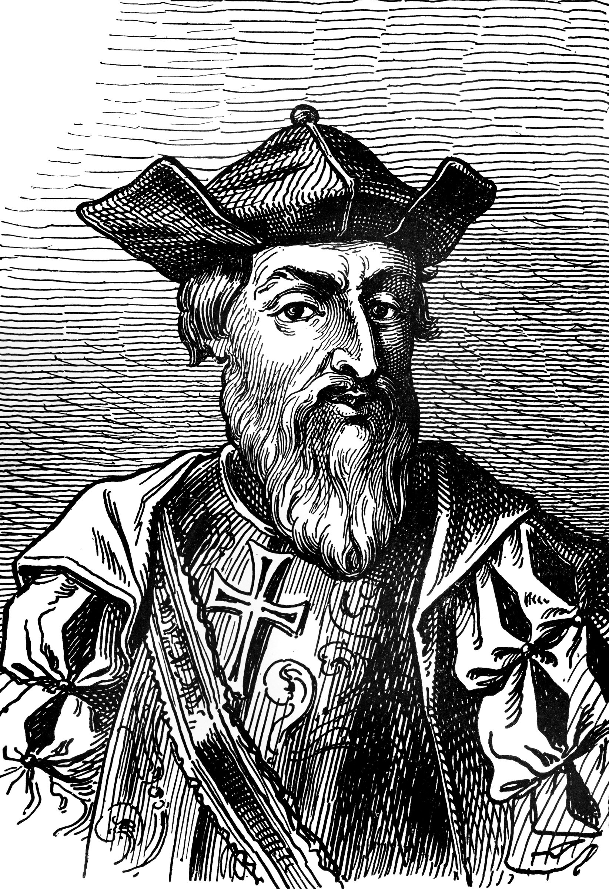

Core Content & PYQ Alignment
69th BPSC PYQ
Dutch factory at Patna: "The Dutch East India Company established its factory at Patna in which year?" Answer: 1632. A direct Bihar-specific PYQ — the Dutch traded in saltpetre, indigo and opium from Patna and Rajmahal.
69th BPSC PYQ
Chronological order: The 69th asked to arrange Home Rule Movement, Minto-Morley Reforms, and Kheda Satyagraha in chronological order. The same pattern applies to European arrival — BPSC tests chronological sequencing heavily in history.
70th BPSC PYQ
Pre-Congress organisations matching: The 70th asked to match pre-Congress organisations with leaders. The same "matching" format is used for European powers ↔ their headquarters, ships, or key figures.
💡 Deep-dive ready: Map-based analysis of European trade routes (Vasco da Gama's voyage, Portuguese settlements, Hooghly factory chain), an inline SVG factory-location map, comparative side-by-side table of all 5 European powers, Bihar saltpetre/opium deep dive, and 7 exam-focused predictions for the 72nd BPSC:
European Trade Routes & Factory Locations Detail →
72nd Prediction
Most likely question patterns from this topic: (1) Matching: European power ↔ headquarters (traps: Dutch=Pulicat not Cochin, French=Pondicherry not Chandernagore). (2) Bihar-specific: Dutch Patna 1632 or saltpetre trade. (3) Chronological: arrival order P→D→E→F. (4) "First to come, last to leave": Portuguese (1498→1961). (5) "Not correctly matched": Dutch—Battle of Swally (wrong, that was English vs Portuguese). See the subpage for detailed analysis of all 7 predictions.
A. European Arrival — The Master Timeline
BPSC tests dates, order of arrival, and headquarters. Learn this timeline cold — every date is a potential one-mark question.
| Year | Event | Power | Key Person |
|---|---|---|---|
| 1498 | Arrival at Calicut (first sea voyage) | Portuguese | Vasco da Gama |
| 1500 | Second voyage; first factory at Calicut | Portuguese | Pedro Álvares Cabral |
| 1505 | First Portuguese viceroy appointed | Portuguese | Francisco de Almeida |
| 1510 | Capture of Goa (from Bijapur) | Portuguese | Afonso de Albuquerque |
| 1595 | First Dutch voyage to India | Dutch | Cornelis de Houtman |
| 1600 | English EIC chartered by Elizabeth I | English | — |
| 1602 | Dutch VOC established (first joint-stock co.) | Dutch | — |
| 1608 | First Englishman at Mughal court | English | William Hawkins (at Surat) |
| 1612 | Battle of Swally (defeat Portuguese) | English | Captain Thomas Best |
| 1613 | First English factory at Surat | English | — |
| 1615 | Official ambassador at Jahangir's court | English | Sir Thomas Roe |
| 1632 | Dutch factory at Patna (Bihar PYQ) | Dutch | — |
| 1639 | Madras (Fort St. George) acquired | English | Francis Day (from Raja of Chandragiri) |
| 1661 | Bombay acquired (dowry of Catherine of Braganza) | English | — |
| 1664 | French East India Company founded | French | Jean-Baptiste Colbert |
| 1674 | Pondicherry founded (French HQ) | French | François Martin |
| 1690 | Calcutta (Fort William) founded | English | Job Charnock |
| 1717 | Farman of Farrukhsiyar (duty-free trade in Bengal) | English | John Surman (embassy) |
🧠 Mnemonic — Arrival Order "P-D-E-F"
Portuguese (1498) → Dutch (1595) → English (1608) → French (1664).
"Port-Dutch-Eng-French: first to come, first to leave? NO! Portuguese came first and left LAST (Goa 1961)!"
Portuguese (1498) → Dutch (1595) → English (1608) → French (1664).
"Port-Dutch-Eng-French: first to come, first to leave? NO! Portuguese came first and left LAST (Goa 1961)!"

Vasco da Gama — the first European to reach India by sea (Calicut, May 1498), around the Cape of Good Hope.

Da Gama's route: Lisbon → Cape of Good Hope → East Africa (Mozambique, Mombasa, Malindi) → Calicut. He was guided from East Africa by an Indian navigator from Gujarat.
B. Portuguese in India — Key Facts
- First to arrive (1498), last to leave (1961): Goa, Daman and Diu were liberated by India in 1961 — 14 years after the British left. This "first to come, last to leave" paradox is a BPSC favourite.
- Vasco da Gama: arrived at Calicut (Kozhikode) in May 1498, received by the Zamorin (local ruler). He sailed around the Cape of Good Hope (Africa).
- Cabral (1500): second voyage, established first factory at Calicut.
- Almeida (1505): first Portuguese viceroy; introduced the "Blue Water Policy" — naval dominance over the Indian Ocean.
- Albuquerque (1506–1515): captured Goa in 1510 from Bijapur; consolidated the "Estado da Índia" (Portuguese maritime empire).
- Goa: Portuguese political HQ from 1510; also the seat of the Inquisition in India (1560–1812).
- Portuguese contributions: introduced tobacco, cashew nuts, chillies (red pepper), and the printing press (first printed book in India: "Conclusões e outras coisas" in Goa, 1556). Also introduced the "Cartaze" system — a pass system requiring Indian ships to buy Portuguese permits.
- Decline: defeated by the English and Dutch in the 17th century; lost their commercial dominance but held Goa, Daman, Diu, and Dadra & Nagar Haveli until 1954–1961.

Portuguese settlements across India — Goa (HQ, 1510), Daman, Diu on the west coast; Cochin and Calicut on the Malabar coast. The Portuguese held these until 1954–1961.
C. Dutch in India — Key Facts
- Dutch East India Company (VOC): established 1602 — the world's first joint-stock company.
- First voyage: Cornelis de Houtman reached India in 1595 (before the company was even formed).
- Headquarters: Pulicat (1610, on the Coromandel Coast), later shifted to Cochin.
- Bihar connection: Dutch factory at Patna (1632) — 69th BPSC PYQ. Traded in saltpetre (for gunpowder), indigo, opium and textiles. Also had a factory at Rajmahal.
- Main trade: spices (pepper, cloves, nutmeg) from the East Indies (Indonesia), textiles and indigo from India. India was a secondary theatre — Indonesia was their primary focus.
- Decline: defeated by the English at the Battle of Bidara (1759); gradually withdrew to focus on Indonesia. Last factory closed in 1825.
D. English (British) in India — Key Facts
- English East India Company: chartered by Queen Elizabeth I on 31 December 1600.
- First arrival: William Hawkins reached Surat in 1608, went to Jahangir's court, was given the title "English Khan".
- Sir Thomas Roe (1615–1619): official ambassador to Jahangir; secured farman for trade — the diplomatic foundation.
- First factory: Surat (1613), after the Battle of Swally (1612) broke Portuguese naval power.
- Three Presidency settlements: Madras / Fort St. George (1639), Bombay (1661, dowry), Calcutta / Fort William (1690, Job Charnock).
- Farman of 1717: Farrukhsiyar granted duty-free trade in Bengal for ₹3,000/year — the commercial foundation that made Bengal the richest English post.
- From trade to empire: after Plassey (1757), the English shifted from commerce to political control — see Topic #25.

European factories on the Hooghly River (Bengal, 18th century): all five powers — English (Calcutta), French (Chandernagore), Danish (Serampore), Dutch (Chinsurah), Portuguese (Hugli) — within 40 km of each other.

European maritime trade routes — the Portuguese came around Africa, the Dutch focused on the East Indies, and the English built three coastal presidency cities.
E. French in India — Key Facts
- French East India Company: founded 1664 by Jean-Baptiste Colbert (finance minister of Louis XIV). State-sponsored, unlike the English/Dutch joint-stock model.
- Headquarters: Pondicherry (founded 1674 by François Martin).
- Other French posts: Chandernagore (Bengal, 1673), Masulipatnam, Karaikal, Mahe, Yanam.
- Dupleix (1742–1754): governor who introduced the "Policy of Imperialism" — using Indian sepoys under European officers and interfering in Indian succession disputes (Carnatic Wars). The English copied this strategy.
- Anglo-French Wars: three Carnatic Wars (1746–1763); the French were ultimately defeated and marginalised.
- Pondicherry remained French until 1954 (de facto transfer to India); de jure in 1962.
F. Danes in India — Quick Facts
- Danish East India Company: established 1616; first settlement at Tranquebar (Tarangambadi, Tamil Nadu, 1620).
- Serampore (Bengal, 1755): the Danish base that became famous for the Serampore Mission (1799) — William Carey, Joshua Marshman, William Ward — the first printing press in Indian languages and pioneering work in Bengali literature and Bible translation.
- Nicobar Islands: also held by the Danes (sold to British in 1868).
- Sold out: the Danes sold all Indian possessions to the British in 1845 (Tranquebar and Serampore).
🧠 Mnemonic — Headquarters "Goa-Pulicat-Madras-Pondi-Tranquebar"
Portuguese → Goa (1510) • Dutch → Pulicat (1610) • English → Madras/Surat (1613/1639) • French → Pondicherry (1674) • Danes → Tranquebar (1620).
"G-P-M-P-T: Goa, Pulicat, Madras, Pondicherry, Tranquebar — five HQs, five powers."
Portuguese → Goa (1510) • Dutch → Pulicat (1610) • English → Madras/Surat (1613/1639) • French → Pondicherry (1674) • Danes → Tranquebar (1620).
"G-P-M-P-T: Goa, Pulicat, Madras, Pondicherry, Tranquebar — five HQs, five powers."